Which of these is NOT one of the three drivers that shape a software architecture?
- The programming language’s syntax
- Functional requirements
- Non-functional requirements
- Business constraints
Show answer
A. The programming language’s syntax
Architecture is shaped by functional requirements, quality requirements and business constraints, and it should be evaluated before construction, when problems are still cheap to fix. Evaluation methods (ATAM, SAAM, ARID) all rest on scenarios and quality attributes. ATAM, the main one, assesses how architectural decisions affect quality goals, with an evaluation team, decision makers and stakeholders working through nine steps: from presenting the method and business drivers, through a quality-attribute utility tree and scenario analysis, to a report of risks, non-risks, sensitivity points and trade-offs. A lightweight ATAM compresses this into a day or less for smaller projects.
Prioritises conflicting goals, forces a clear explanation, improves documentation, uncovers reuse, improves practices.
ATAM, SAAM and ARID all use scenarios and quality attributes.
Present ATAM → business drivers → architecture → identify approaches → utility tree → analyse → brainstorm scenarios → analyse again → present results.
Risks, non-risks, sensitivity points (decisions that strongly affect one quality) and trade-offs (decisions that affect several qualities in opposite ways).
Final 252 Q8 (5 marks with Chapter 9) asked three questions from this chapter: two benefits of architecture evaluation, the difference between ATAM and lightweight ATAM, and the shared point of all evaluation methods. Learn the nine ATAM steps in order as well.
Every original slide is shown unchanged. Yellow marks on a slide point to a numbered note: hover or tap a mark to jump to its note, and hover a note to see its marks. Questions tagged Past exam appeared on a real paper; Prediction questions are likely angles, not confirmed.
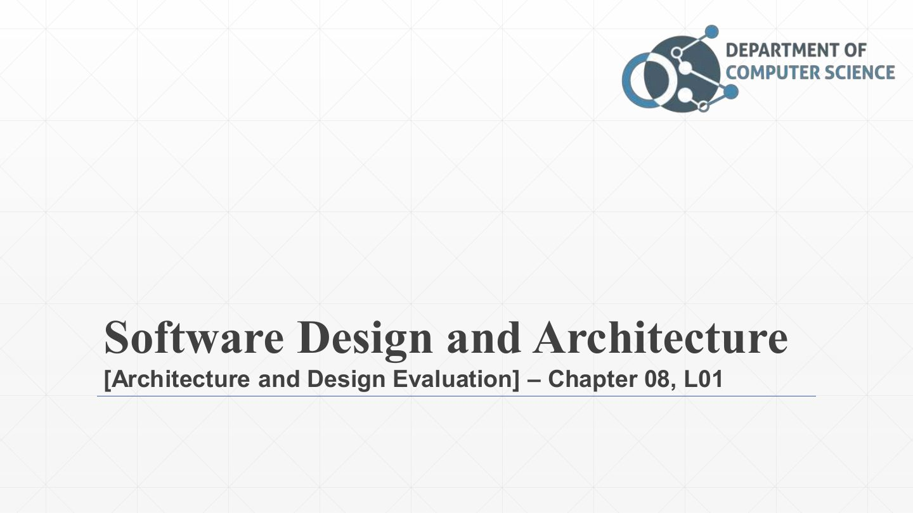
Chapter 8 returns to the third key task of architectural design from Chapter 2: evaluating and validating the architecture before it is built.
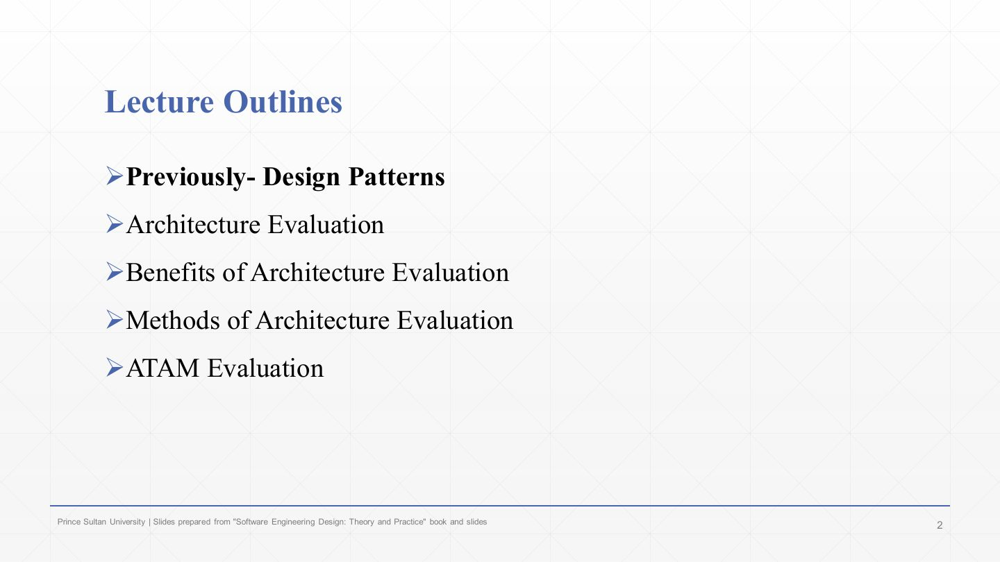
Why architectures are evaluated.
The benefits of evaluation.
The main evaluation methods.
ATAM in detail, and its lightweight version.
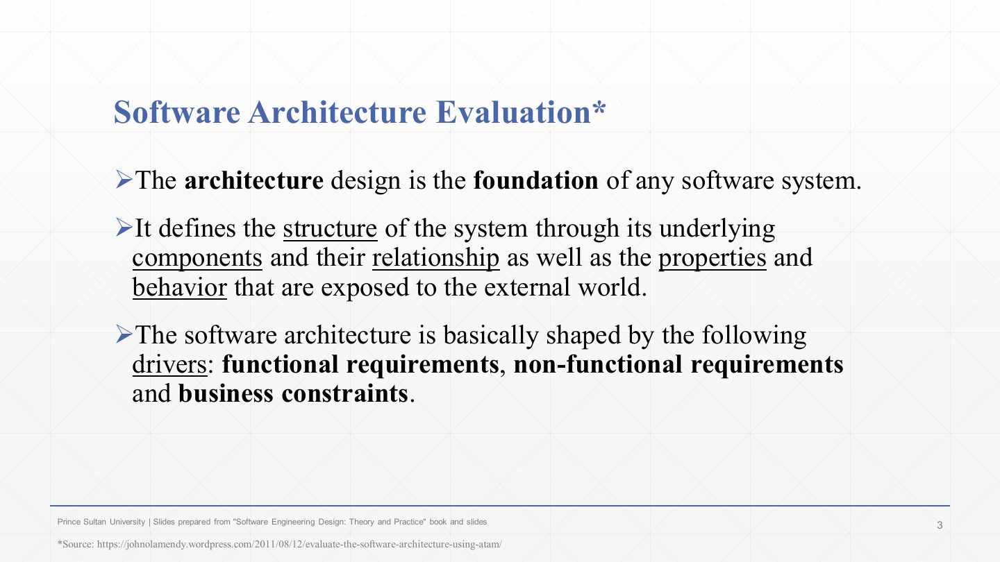
The architecture is the foundation of a system: it defines the structure (components and relationships) and the properties and behaviour exposed to the outside world.
It is shaped by three drivers: functional requirements, non-functional (quality) requirements and business constraints (budget, schedule, regulations). An evaluation checks the architecture against all three.
Which of these is NOT one of the three drivers that shape a software architecture?
A. The programming language’s syntax
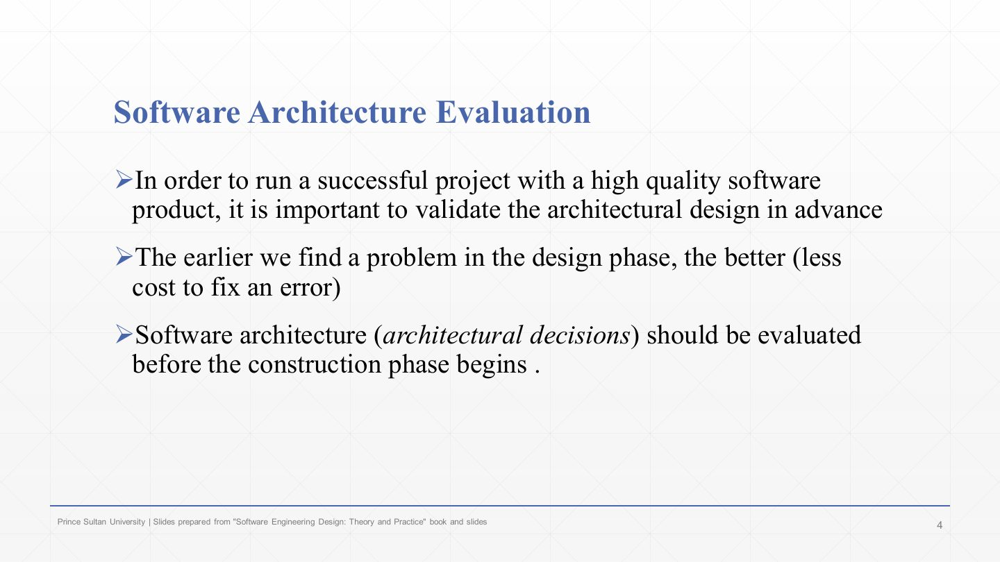
For a successful project and a high-quality product, the architectural design must be validated in advance.
The earlier a problem is found, the cheaper it is to fix: a wrong decision found on paper costs a meeting; found in code, it costs a rewrite.
So architectural decisions should be evaluated before construction begins.
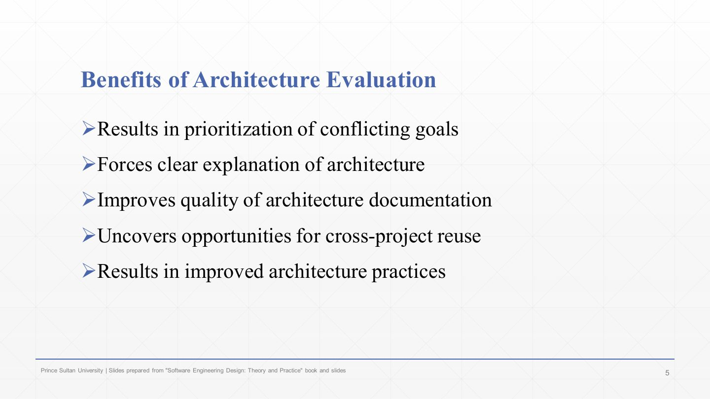
It results in prioritisation of conflicting goals: stakeholders must agree which qualities matter most when they clash.
It forces a clear explanation of the architecture: the architect must be able to present and justify it.
It improves the quality of the architecture documentation, because gaps show up during the review.
It uncovers opportunities for cross-project reuse of components and approaches.
It leads to improved architecture practices in the organisation over time.
What are the benefits of architecture evaluation? State two only.
Any two: it forces prioritisation of conflicting goals; it forces a clear explanation of the architecture; it improves the quality of architecture documentation; it uncovers opportunities for cross-project reuse; it results in improved architecture practices. (Finding problems early, when they are cheap to fix, is also accepted.)
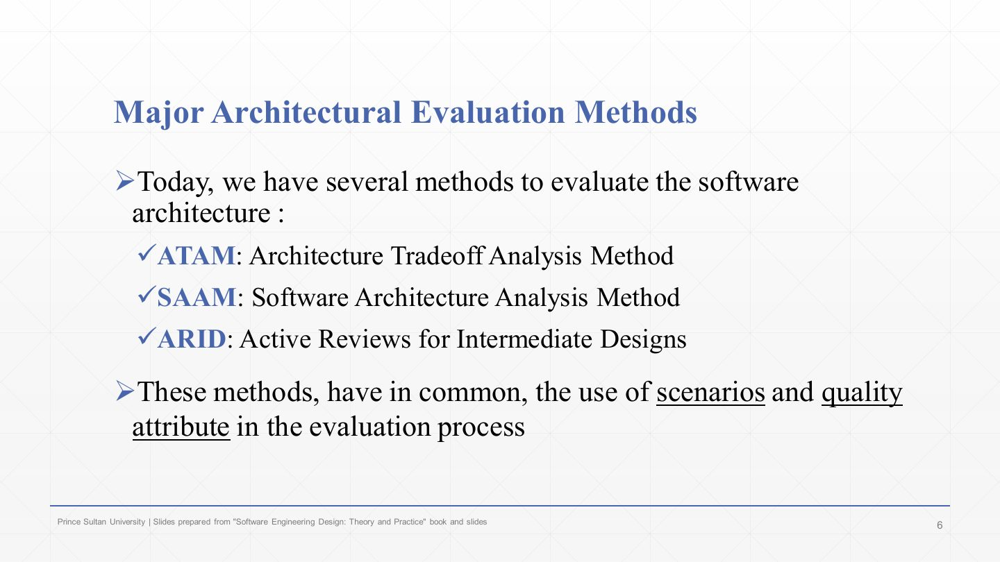
ATAM: the Architecture Tradeoff Analysis Method (the main one in this chapter).
SAAM (Software Architecture Analysis Method) and ARID (Active Reviews for Intermediate Designs) are other established methods.
What they all have in common: they evaluate the architecture using scenarios and quality attributes. They differ in depth and focus, not in the underlying idea.
What is the shared, common point between all architecture evaluation methods?
All methods (ATAM, SAAM, ARID) are built on the same two ingredients: scenarios and quality attributes. They differ in depth and focus, not in the underlying idea.
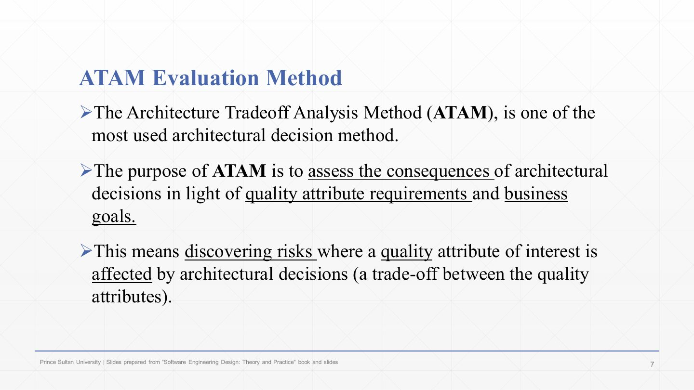
The Architecture Tradeoff Analysis Method (ATAM) is one of the most widely used evaluation methods.
Its purpose: assess the consequences of architectural decisions in light of the quality-attribute requirements and the business goals.
In practice that means discovering risks: places where an architectural decision affects a quality attribute of interest, often through a trade-off between qualities.
What does ATAM stand for, and what is its purpose?
Architecture Tradeoff Analysis Method. It assesses the consequences of architectural decisions against the quality-attribute requirements and business goals, discovering risks and trade-offs between quality attributes.
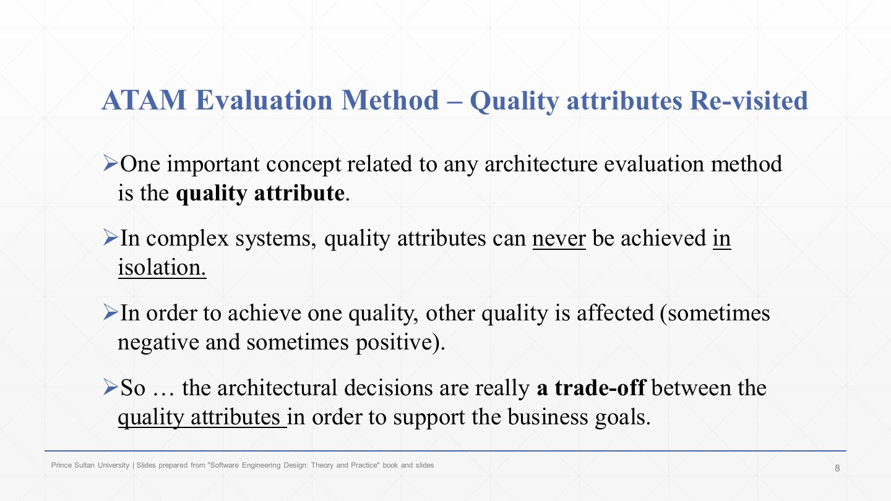
The key concept in every evaluation method is the quality attribute (Chapter 3).
In complex systems qualities can never be achieved in isolation: improving one affects others, sometimes negatively (encryption adds security but costs performance), sometimes positively (modularity helps both modifiability and testability).
So architectural decisions are really trade-offs between qualities in support of the business goals, which is exactly what ATAM analyses.
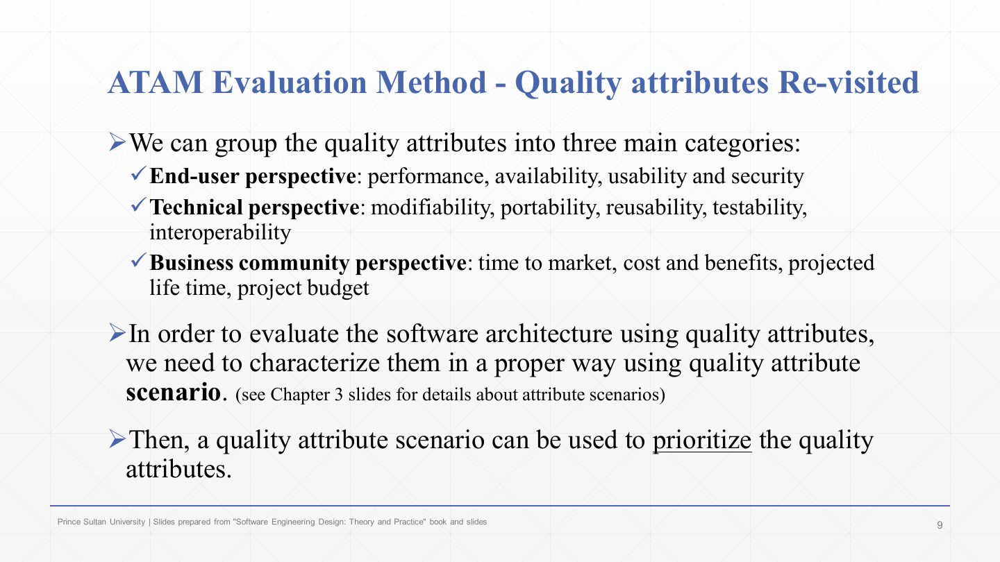
End-user perspective: performance, availability, usability, security.
Technical perspective: modifiability, portability, reusability, testability, interoperability.
Business community perspective: time to market, cost and benefits, projected lifetime, project budget.
To evaluate an architecture against them, each must be characterised as a quality attribute scenario (Chapter 3); the scenarios are then used to prioritise the qualities.
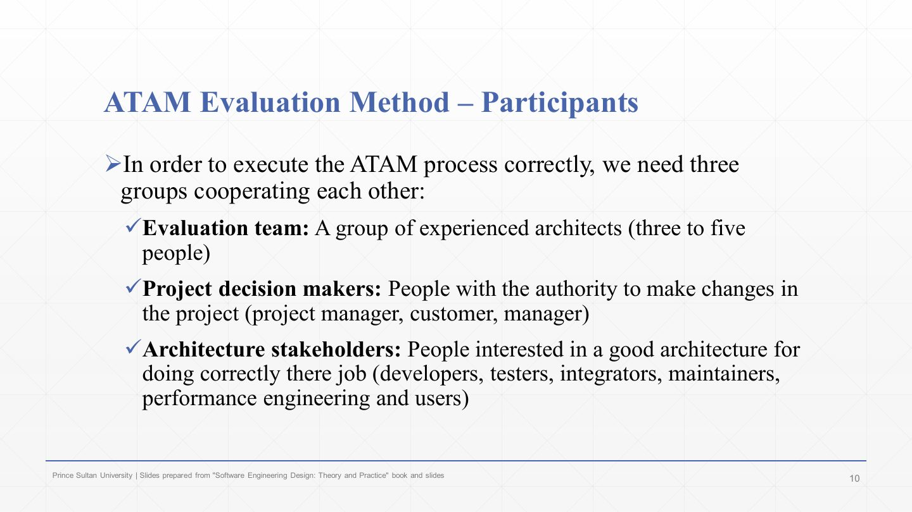
The evaluation team: three to five experienced architects who run the evaluation.
Project decision makers: people with authority to change the project (project manager, customer, manager).
Architecture stakeholders: people who need a good architecture to do their jobs (developers, testers, integrators, maintainers, performance engineers, users).
Name the three groups that take part in an ATAM evaluation.
The evaluation team (3–5 experienced architects), the project decision makers (manager, customer), and the architecture stakeholders (developers, testers, integrators, maintainers, users).
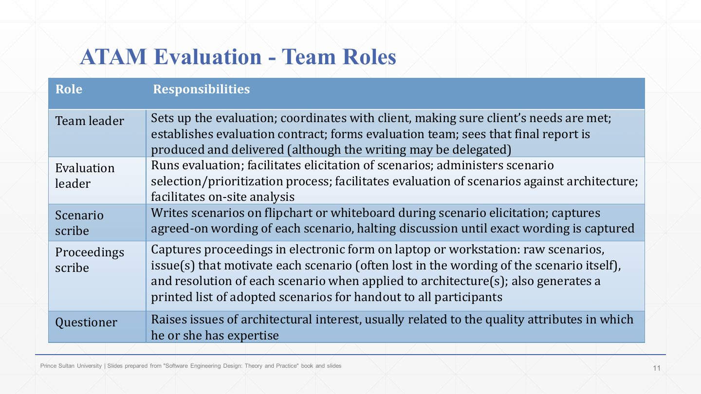
Team leader: sets up the evaluation contract with the client, forms the team, and makes sure the final report is produced and delivered. (The garbled text on the slide is overlapping lines in the PDF.)
Evaluation leader: runs the evaluation, facilitates scenario elicitation, runs scenario selection and prioritisation, and facilitates evaluating scenarios against the architecture.
Scenario scribe writes scenarios on the board and captures their agreed wording, stopping discussion until it is exact; the proceedings scribe records everything electronically (scenarios, the issues behind them, how each was resolved) and prints the adopted scenarios.
Questioner: raises issues of architectural interest, usually about the quality attributes they specialise in.
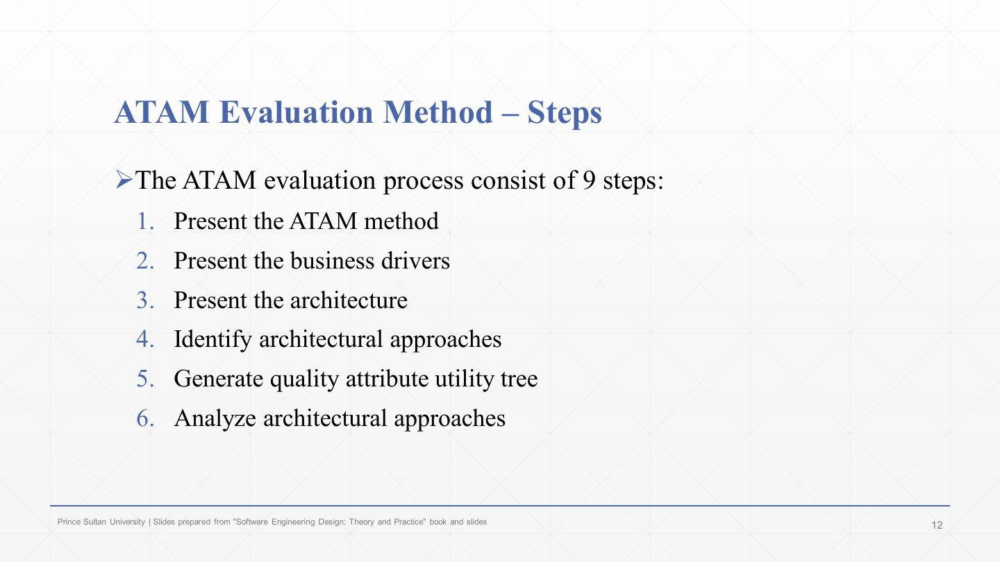
Steps 1–3 set the context: present ATAM, present the business drivers, present the architecture.
Steps 4–6 do the first analysis: identify architectural approaches, generate the quality-attribute utility tree, analyse the approaches against its top scenarios.
List the nine steps of ATAM in order.
1 Present the ATAM method. 2 Present the business drivers. 3 Present the architecture. 4 Identify architectural approaches. 5 Generate the quality attribute utility tree. 6 Analyse architectural approaches. 7 Brainstorm and prioritise scenarios. 8 Analyse architectural approaches (again, with the new scenarios). 9 Present results.
In which ATAM step is the quality attribute utility tree generated?
A. Step 5
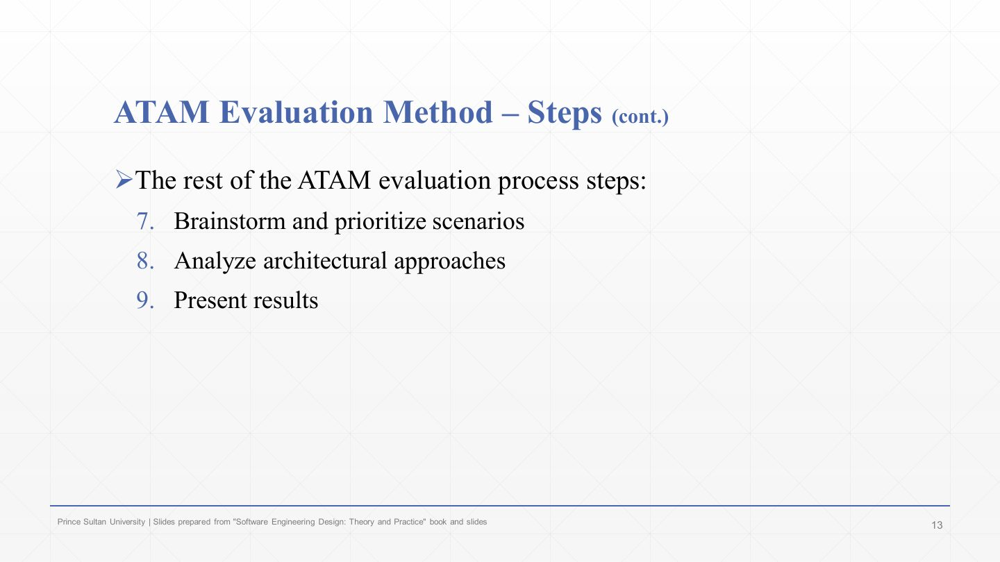
Steps 7–8 widen the view: all stakeholders brainstorm and prioritise scenarios, and the approaches are analysed again against them.
Step 9: present the results.
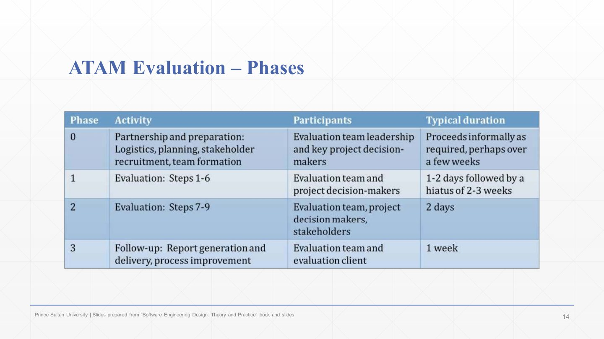
Phase 0, partnership and preparation: logistics, planning, recruiting stakeholders, forming the team. Evaluation-team leadership and key decision makers; informal, perhaps over a few weeks.
Phase 1, evaluation steps 1–6: the evaluation team and project decision makers; 1–2 days, followed by a 2–3 week break.
Phase 2, evaluation steps 7–9: the evaluation team, decision makers and stakeholders; 2 days.
Phase 3, follow-up: report generation and delivery, process improvement; evaluation team and client; 1 week.
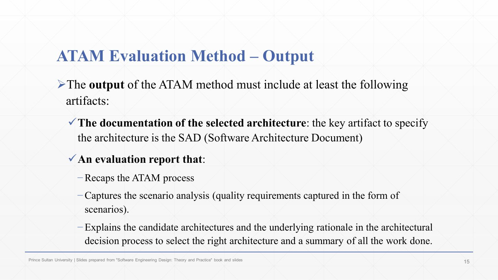
ATAM must produce at least the documentation of the selected architecture, whose key artefact is the SAD (Software Architecture Document) (Chapter 9).
And an evaluation report that recaps the ATAM process, captures the scenario analysis (quality requirements written as scenarios), and explains the candidate architectures and the rationale for choosing one, with a summary of the work done.
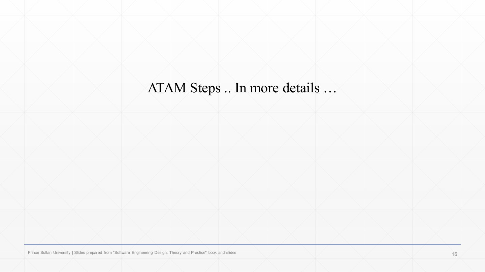
Section divider: slides 17–28 go through the nine steps one by one.
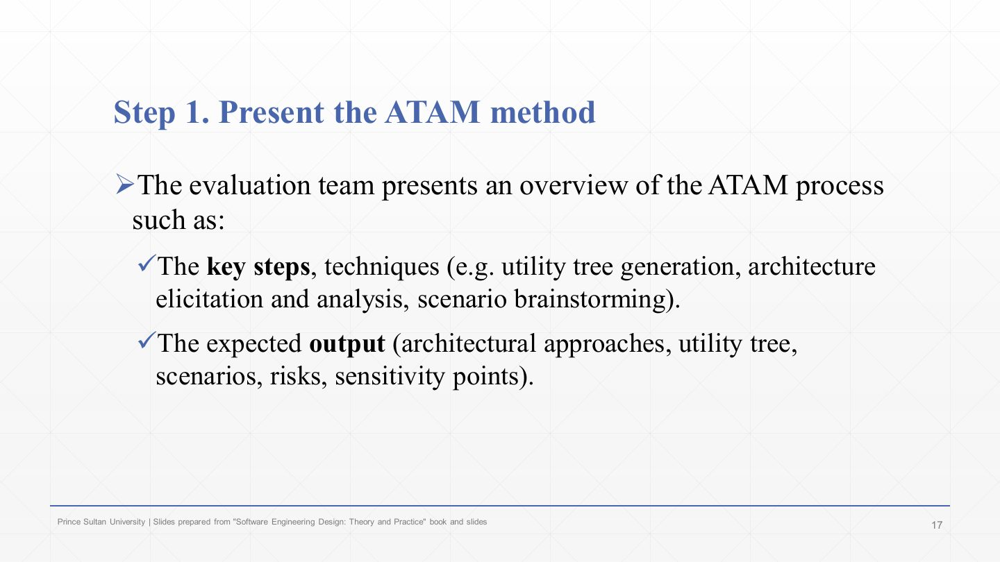
Step 1: the evaluation team presents an overview of ATAM: its key steps and techniques (utility-tree generation, architecture elicitation and analysis, scenario brainstorming)…
…and the expected output: architectural approaches, the utility tree, scenarios, risks and sensitivity points.
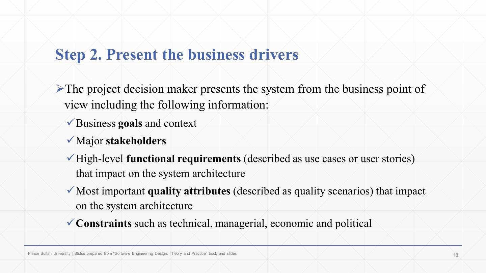
Step 2: the project decision maker presents the system from the business point of view.
That covers the business goals and context, and the major stakeholders.
The high-level functional requirements (use cases, user stories) and the most important quality attributes (as quality scenarios) that affect the architecture.
And the constraints: technical, managerial, economic and political.
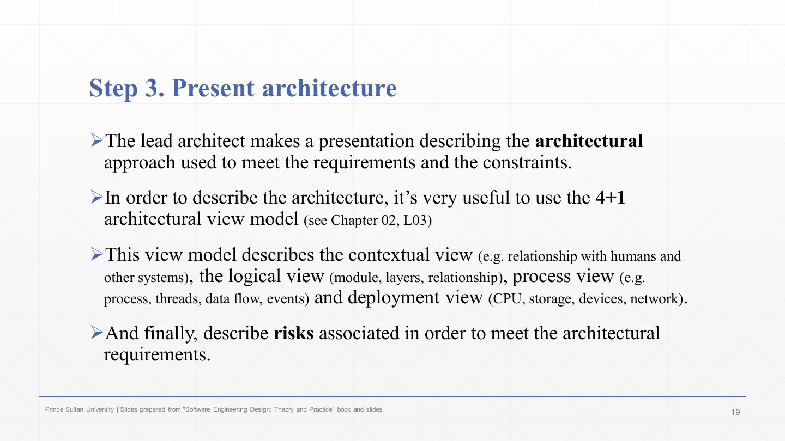
Step 3: the lead architect presents the architectural approach used to meet the requirements and constraints.
The 4+1 view model (Chapter 2, Lecture 3) is a good way to structure the presentation.
It covers the contextual view (relationships with people and other systems), the logical view (modules, layers), the process view (processes, threads, data flow, events) and the deployment view (CPUs, storage, devices, network).
Finally, the architect describes the risks in meeting the architectural requirements.
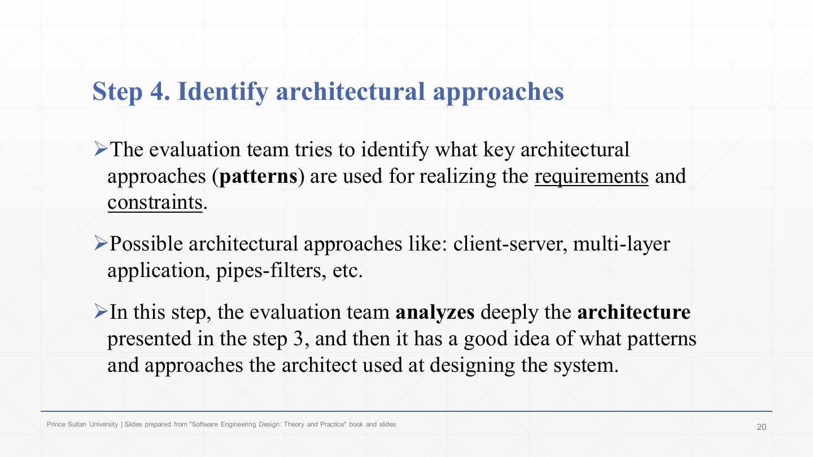
Step 4: the evaluation team identifies the key architectural approaches (patterns) used to realise the requirements and constraints.
For example client–server, multi-layer, pipes and filters (Chapter 4).
The team analyses the architecture from step 3 in depth until it knows which patterns and approaches the architect used. These approaches are what the later analysis tests.
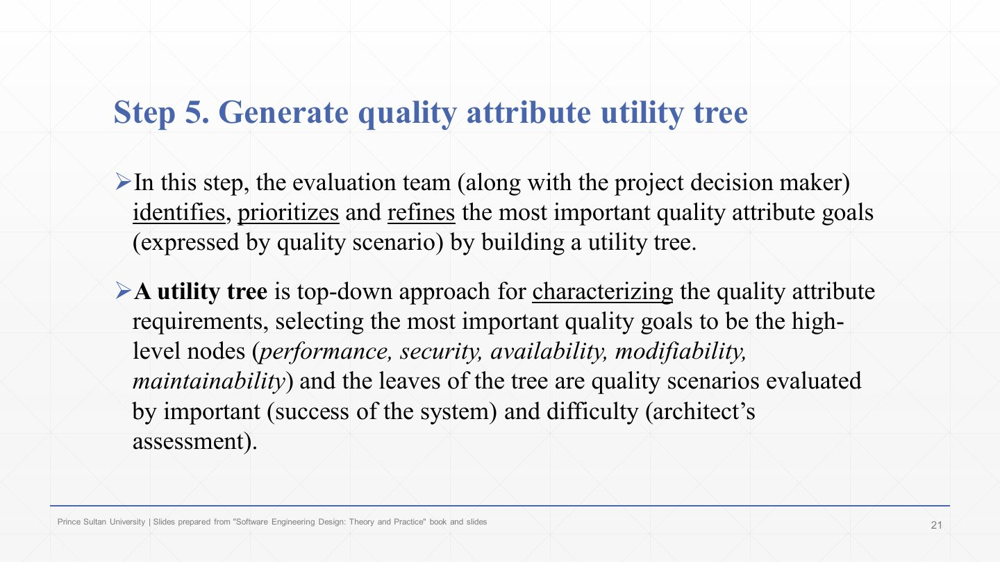
Step 5: the evaluation team, with the decision maker, identifies, prioritises and refines the most important quality-attribute goals, expressed as scenarios, by building a utility tree.
A utility tree is a top-down way of characterising the quality requirements: the root is “utility”, the next level the most important qualities (performance, security, availability, modifiability, maintainability), and the leaves are concrete quality scenarios.
Each leaf is rated for importance to the system’s success and difficulty to achieve (the architect’s assessment), usually H/M/L. High-importance, high-difficulty (H,H) scenarios are analysed first.
What is a quality attribute utility tree, and how are its leaves rated?
A top-down tree: utility at the root, important quality attributes as the next level (refined into sub-concerns), and concrete quality scenarios as leaves. Each leaf is rated (H/M/L) for its importance to the system’s success and its difficulty to achieve, so the most important and difficult scenarios are analysed first.
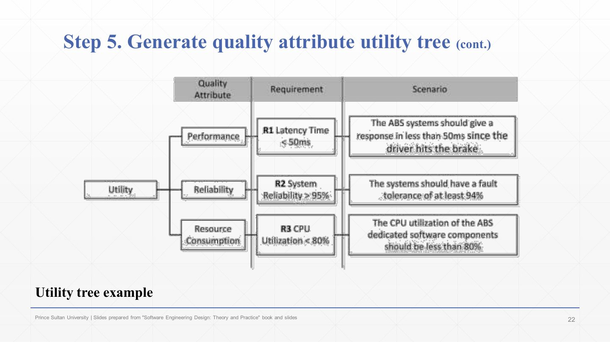
A utility tree for a car’s anti-lock braking system (ABS), with three columns: quality attribute → requirement → scenario.
Performance → R1 latency < 50 ms → “the ABS should respond in less than 50 ms after the driver hits the brake”.
Reliability → R2 system reliability > 95% → “fault tolerance of at least 94%” (note the slide’s numbers don’t quite match). Resource consumption → R3 CPU utilisation < 80% → “CPU use of the ABS software below 80%”.
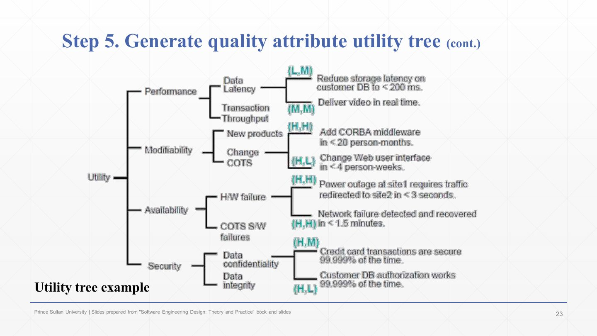
The textbook utility tree with ratings (importance, difficulty). Performance: data latency → reduce storage latency on the customer DB to < 200 ms (L,M); transaction throughput → deliver video in real time (M,M).
Modifiability: new products → add CORBA middleware in < 20 person-months (H,H); change COTS → change the web UI in < 4 person-weeks (H,L).
Availability: hardware failure → power outage at site 1 redirects traffic to site 2 in < 3 s (H,H); COTS software failure → network failure detected and recovered in < 1.5 min (H,H).
Security: data confidentiality → credit-card transactions secure 99.999% of the time (H,M); data integrity → customer DB authorisation works 99.999% of the time (H,L). The (H,H) leaves go to step 6 first.
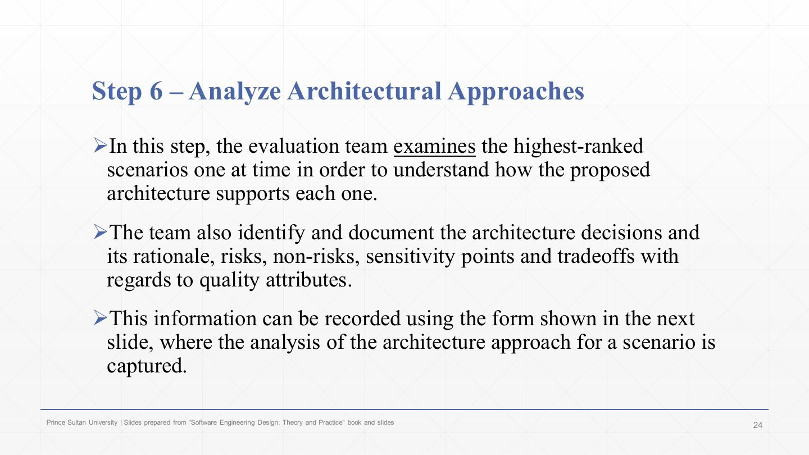
Step 6: the evaluation team examines the highest-ranked scenarios one at a time to understand how the architecture supports each one.
For each, it documents the relevant architecture decisions and their rationale, and classifies the findings as risks (decisions that may prevent a quality goal), non-risks (decisions judged safe), sensitivity points (decisions that strongly affect one quality’s response) and trade-offs (decisions that affect several qualities in opposite directions).
The findings are recorded on an analysis form (next slide).
In ATAM, what is the difference between a sensitivity point and a trade-off point?
A sensitivity point is an architectural decision that strongly affects the response of one quality attribute. A trade-off point is a decision that affects several quality attributes, improving one while degrading another (e.g. encryption: better security, worse performance).
A decision that improves one quality attribute while degrading another is recorded in ATAM as a:
A. Trade-off point
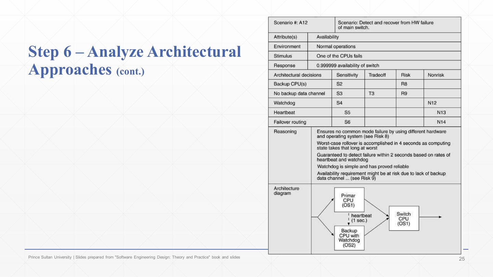
The analysis form for one scenario. Scenario A12: detect and recover from a hardware failure of the main switch. Attribute: availability; environment: normal operations; stimulus: one of the CPUs fails; response: 0.999999 availability of the switch.
Architectural decisions with their classification: backup CPU(s) (sensitivity S2, risk R8); no backup data channel (S3, trade-off T3, risk R9); watchdog (S4, non-risk N12); heartbeat (S5, N13); failover routing (S6, N14).
Reasoning: different hardware and OS avoid common-mode failure (see risk 8); worst-case rollover is 4 seconds; failure is detected within 2 seconds from the heartbeat and watchdog rates; the watchdog is simple and proven; availability might be at risk without a backup data channel (risk 9). The architecture diagram shows primary and backup CPUs with heartbeat (1 s) to the switch CPU.
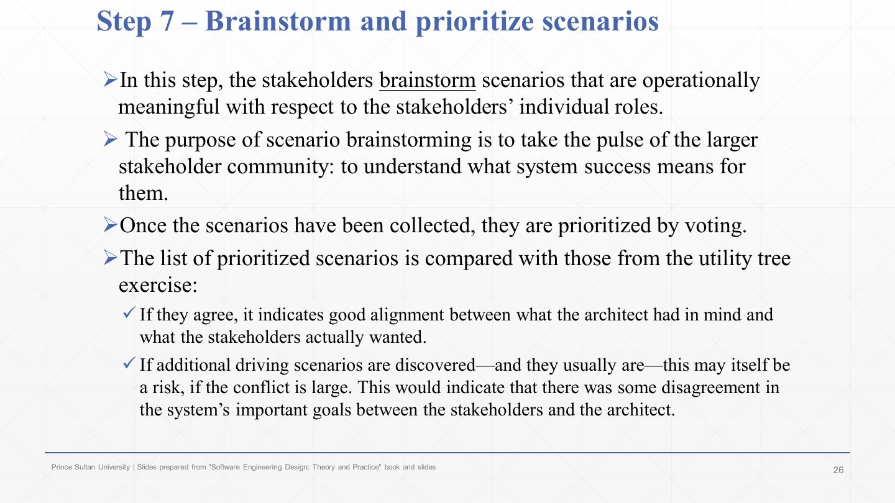
Step 7: the wider group of stakeholders brainstorms scenarios that matter for their own roles.
The purpose is to take the pulse of the larger stakeholder community: what does success mean for them?
The scenarios are prioritised by voting, then compared with the utility tree from step 5. If they agree, the architect and stakeholders are aligned.
If new driving scenarios appear (they usually do), that may itself be a risk when the gap is large: the architect and stakeholders disagree about the system’s important goals.
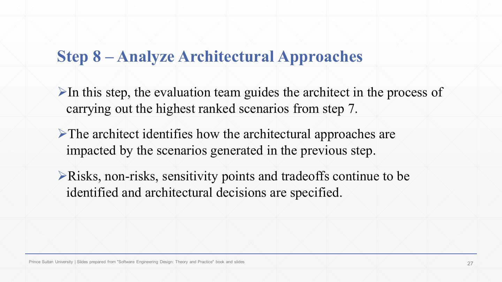
Step 8: the evaluation team guides the architect through the highest-ranked scenarios from step 7.
The architect explains how the architectural approaches are affected by these new scenarios.
Risks, non-risks, sensitivity points and trade-offs continue to be identified, and architectural decisions are specified. It is step 6 repeated with the stakeholders’ scenarios.
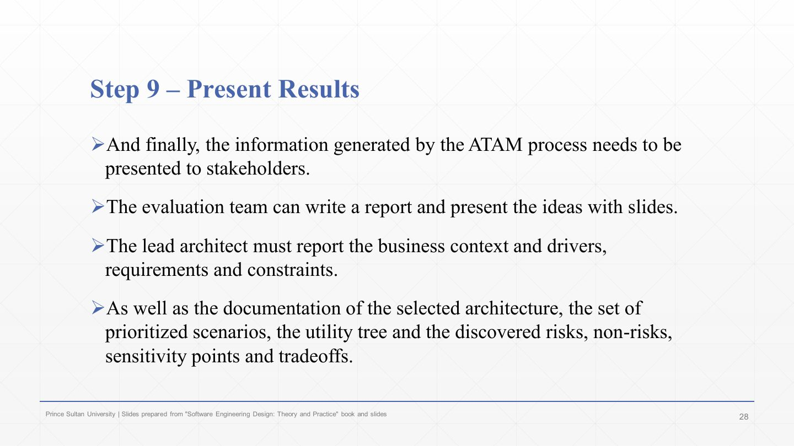
Step 9: the information generated by ATAM is presented to the stakeholders.
The evaluation team writes a report and presents it with slides.
The lead architect reports the business context and drivers, requirements and constraints.
Plus the documentation of the selected architecture, the prioritised scenarios, the utility tree, and the risks, non-risks, sensitivity points and trade-offs discovered.
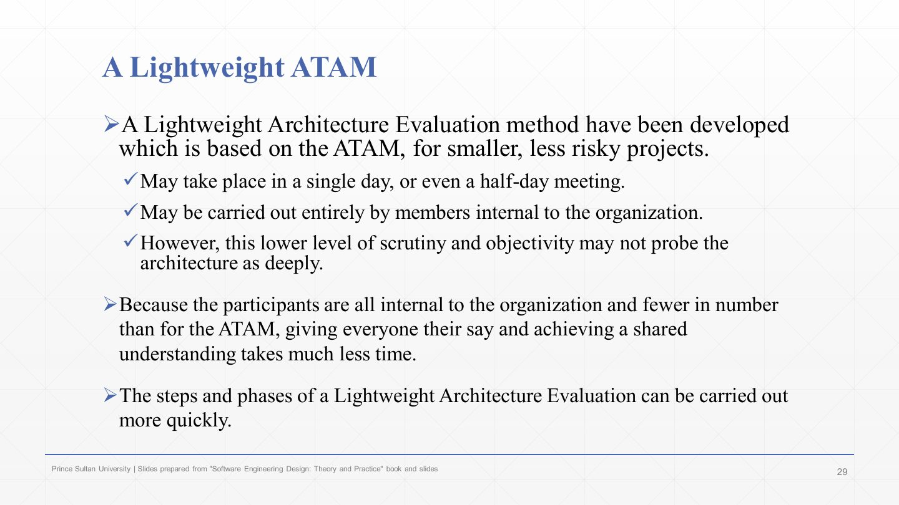
A lightweight evaluation method based on ATAM exists for smaller, less risky projects.
It may take a single day or even half a day.
It may be run entirely by people internal to the organisation. Because participants are internal and fewer, giving everyone their say and reaching shared understanding is much faster, and the steps run more quickly.
The cost: a lower level of scrutiny and objectivity, so it may not probe the architecture as deeply as a full ATAM with an external team.
What is the main difference between ATAM and lightweight ATAM?
Lightweight ATAM keeps the same nine steps but is scaled down for smaller, lower-risk projects: it can be done in about half a day (or a day), using only people inside the organisation. It is faster, but less deep and less objective than a full ATAM run with an external evaluation team.
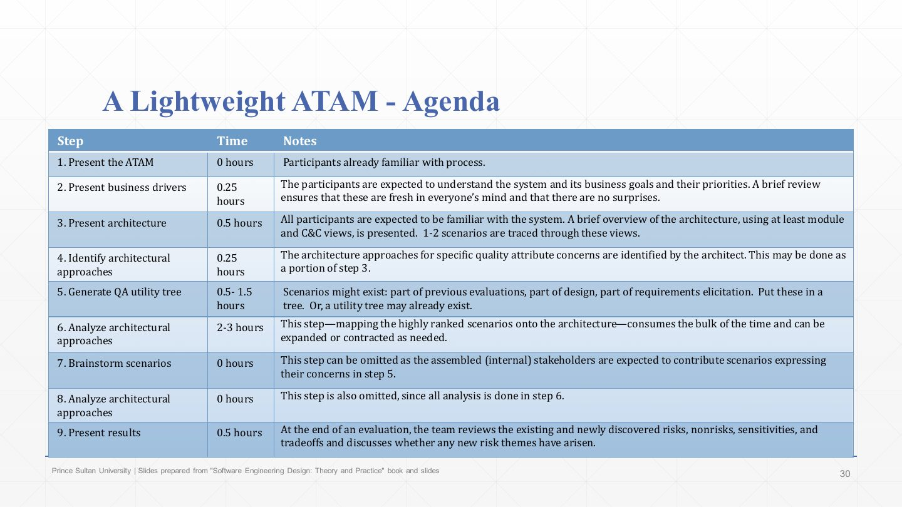
The lightweight agenda. Step 1 (present ATAM) takes 0 hours, because participants already know the process; steps 2–4 take 15–30 minutes each, because everyone knows the system (1–2 scenarios are traced through the module and C&C views in step 3).
Step 5 (utility tree) takes 0.5–1.5 hours, often reusing existing scenarios; step 6 (analysis) takes the bulk, 2–3 hours, mapping the top scenarios onto the architecture.
Steps 7 and 8 are dropped (0 hours): the internal stakeholders already contributed scenarios in step 5, and all analysis happens in step 6. Step 9 (results) takes 0.5 hours to review the risks, non-risks, sensitivities and trade-offs. Total: about half a day to a day.
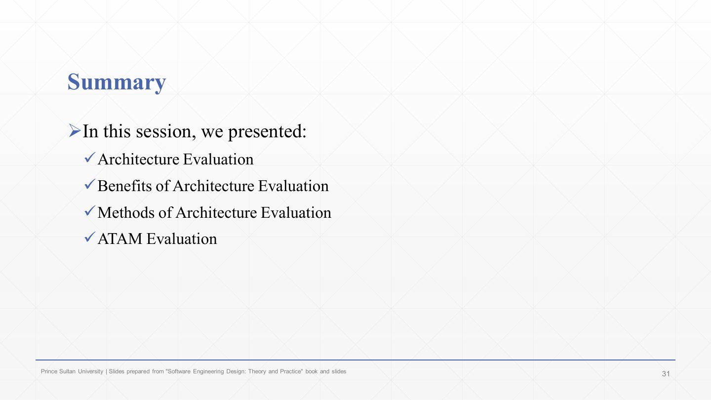
Recap: why and when to evaluate an architecture, its benefits, the methods (ATAM, SAAM, ARID: all scenario- and quality-based), and ATAM’s participants, nine steps, phases and outputs, plus the lightweight variant.
Next: documenting the architecture (Chapter 9).